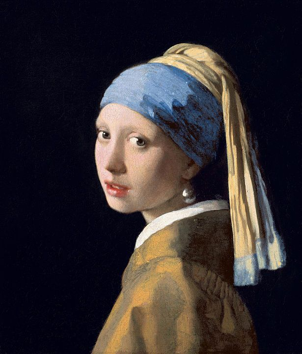
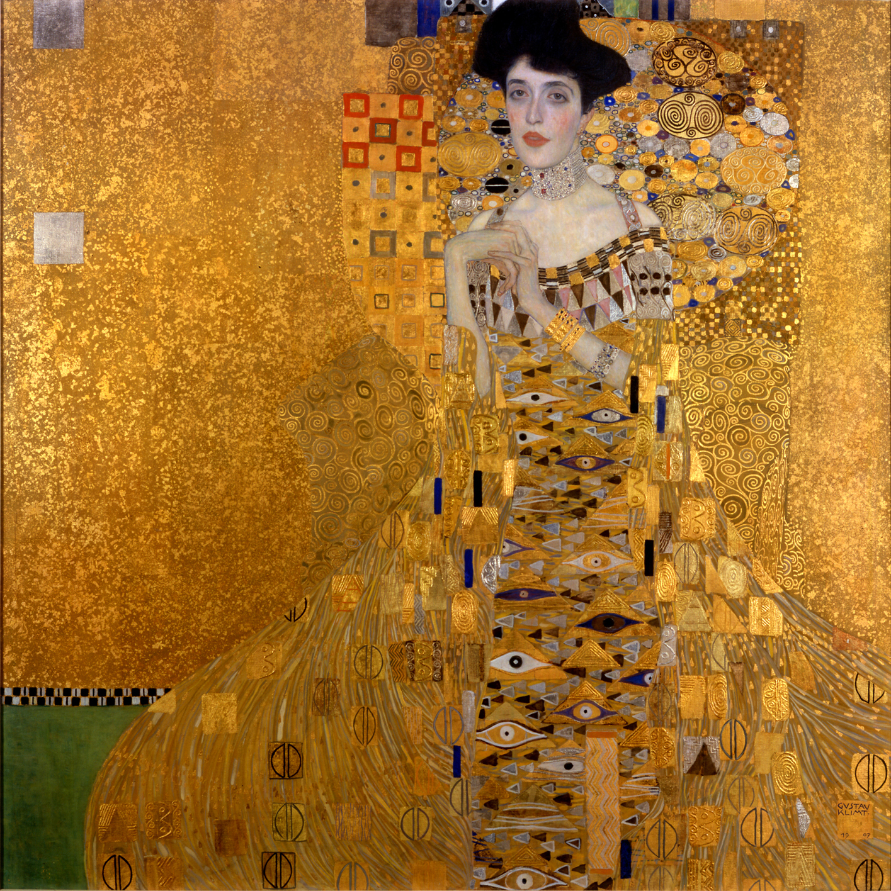
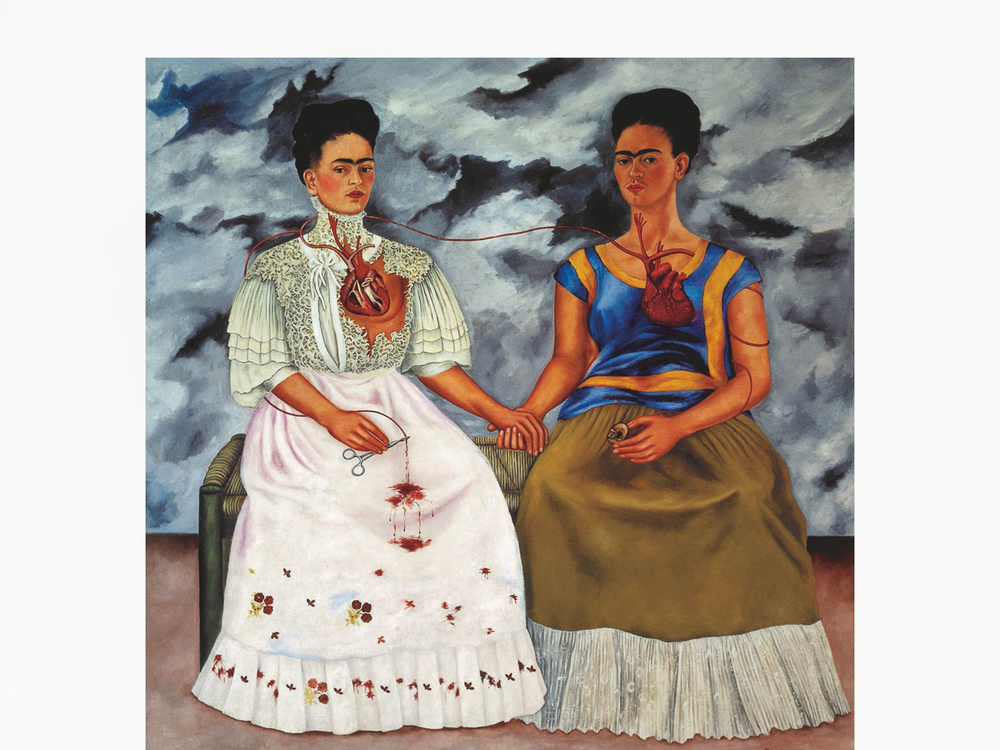

Artistas Destacados

Johannes Vermeer
Pintor neerlandés del siglo XVII, maestro del Barroco conocido por sus obras llenas de luz y realismo. Su obra más famosa es La joven de la perla.

Gustav Klimt
Artista austriaco del movimiento modernista, conocido por su uso del dorado y simbolismo. Autor de obras como El beso y Retrato de Adele Bloch-Bauer I.

Frida Kahlo
Pintora mexicana del siglo XX, reconocida por su estilo personal y su representación simbólica del dolor y la identidad. Autora de Las dos Fridas.